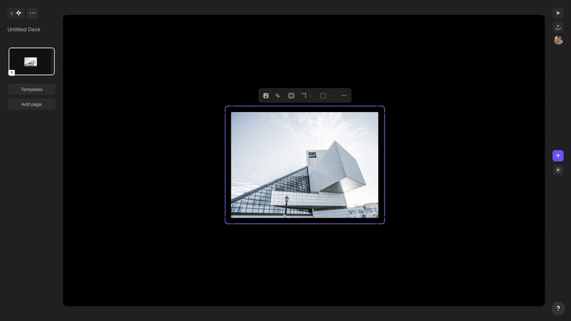
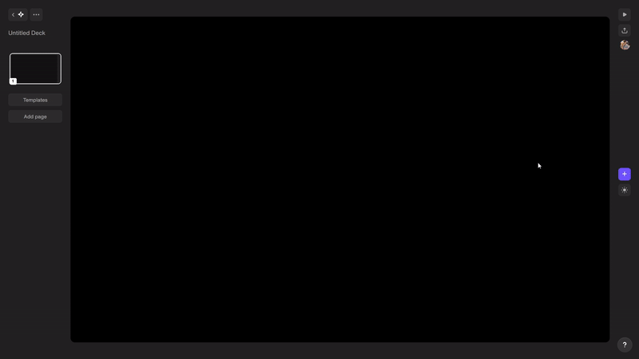
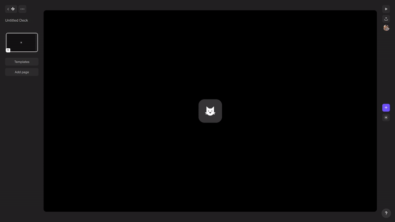
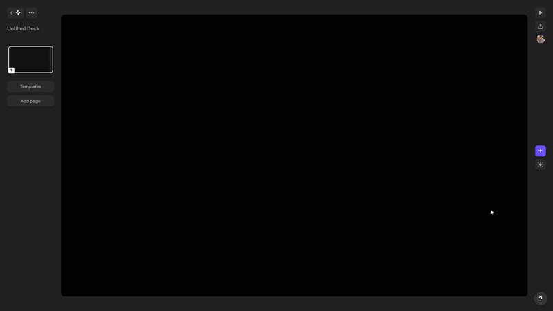
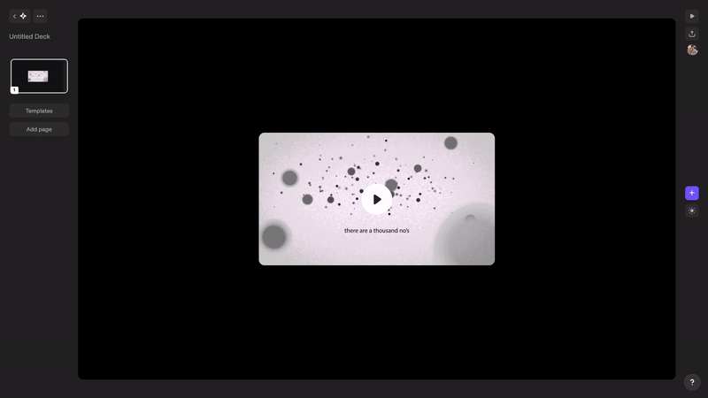

Chronicle is a startup dedicated to redefining the creation and delivery of engaging presentation experiences. I began my journey here first as an intern before transitioning to a full-time software engineer role. Apart from helping out the senior team members in addressing and rectifying critical product bugs, I contributed to several facets of the software which I have chronicled below.
Chronicle follows a block based approach for creating slides in your a presentation. There are a variety of pre-made beautiful blocks available for you to help you out. Before we go ahead and try delving deeper into the work described above, here are a few terms that would aid in understanding:
When you go ahead to add an Image block into your presentation, the first thing that opens up is the Image Picker. It lets you choose from stock images fetched from Unsplash and Giphy. A set of 30 images are loaded in the first fetch and more are fetched as you scroll down. You also have a search bar to let you search for the kind of images you are looking for. There's also an upload button to let you upload an image from your desktop if you want.
Once you have an Image block in place, you can go ahead and change it's properties from the Contextual menu. From there you can choose to Replace, Crop, or edit the Shape of the image. In there, you also have block actions common to all blocks like - Bring to Front, Bring to Back, Duplicate, and Delete

Image block editing mechanism in Chronicle using "Contextual menu"You add the Icon block from the forward slash menu.

Icon block insertion mechanism in Chronicle using "Forward slash menu"Using either the Contextual menu or Block toolbar, you can choose to Replace, or edit the Shape, and Size (S/M/L) of the icon.

Icon block editing mechanism in Chronicle using "Block toolbar"You add the block from the Forward slash menu, and using the Block toolbar, you can choose to edit URL, Start time, or Navigate back to the original video. The Contextual menu for this block only contains common block actions and no block specific actions.

Video block insertion mechanism in Chronicle using "Forward slash menu"
Video block editing mechanism in Chronicle using 'Block toolbar'